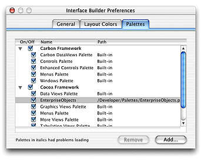
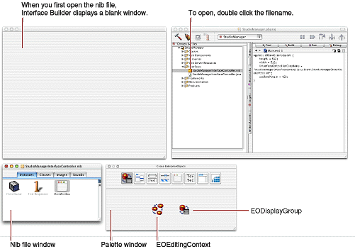
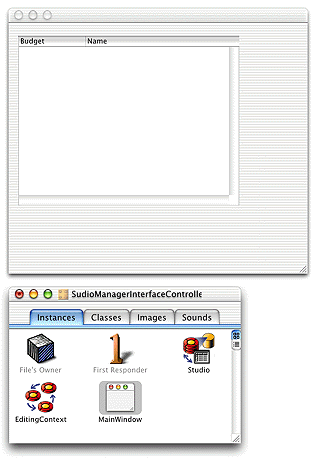
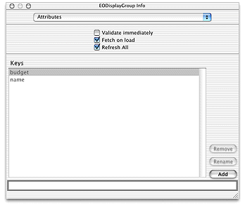
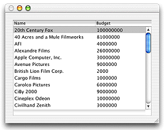
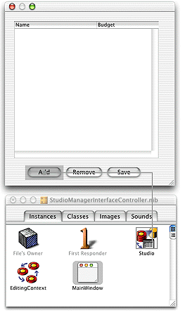

| PATH |

When you create a Java Client application using the Project Builder Assistant, Project Builder puts a nib file in the Interfaces group of the project. A nib file is primarily a description of a user interface (or part of a user interface). It resides in the Interfaces group of the project, is edited by the Interface Builder application and can be archived along with other resources of your application. This interface file is just like the interface files in typical applications, which are defined using Cocoa objects. The Enterprise Objects palette translates the Cocoa objects into Swing objects that Java Client uses to generate the user-interface on the client.
You typically construct a user interface using Interface Builder, by dragging objects from a palette and dropping them into the content window. Java Client WebObjects applications require that the Enterprise Objects palette be loaded into Interface Builder. This palette includes two objects: EOEditingContext and EODisplayGroup.
Before you can create the user-interface for a Java Client application, you have to make sure that Interface Builder has the EnterpriseObjects palette loaded. To do this you need to launch Interface Builder and examine its Preferences window.
Navigate to /Developer/Applications and
launch Interface Builder.
In Interface Builder, choose Interface Builder > Preferences.
Click the Palettes tab.
If you don't see the EnterpriseObjects option, you add it by performing these steps:
EnterpriseObjects.palette.Make sure that EnterpriseObjects is selected.
Close the Interface Builder Preferences window.
Choose Interface Builder > Quit Interface Builder.
You can construct a basic interface for a Java Client WebObjects application by simply dragging icons from EOModeler into the content window in Interface Builder
In the Groups & Files list of the Project Builder main window, open the Interfaces group.
Double-click StudioManagerInterfaceController.nib.
A blank window (the content window), a nib file window, and a palette window appear when Interface Builder is launched. In Figure 2-3 you can see the windows you'll use to create your application's user interface.
Figure 2-3 The Interface Builder environment
If you don't see the EnterpriseObjects palette, which contains the EOEditingContext and EODisplayGroup elements, you need to add it. For details on how to perform this task, see "Adding the EnterpriseObjects Palette".
In the Groups & Files list, open the Resources group.
Double-click Movies.eomodeld.
Note: This is a duplicate of the model file you created in "Creating the Movies Model". The original model file will not be touched in the remaining of this tutorial. |
In the nib file window, there's a new EODisplayGroup named "Studio", after the entity you dragged in. Note that the nib file window also includes an EOEditingContext object. An EOEditingContext object is added to your application along with the first entity you drag into Interface Builder. Because a document typically only needs one EOEditingContext, this object is only added once.
(See "What Are EODisplayGroups and EOEditingContexts?" for more on display groups and editing contexts.)
An entity EODisplayGroup has keys that correspond to the properties in its associated entity. You can examine these keys in the EODisplayGroup Info window.
Select the Studio EODisplayGroup in the nib file window.
Choose Tools > Show Info.
Display the Attributes pane by choosing it from the pop-up menu below the Info window's title bar.
Make sure that "Fetch on load" is selected.
The "Fetch on load" option is important because it allows data to be fetched from the database when you start your application.
The keys listed correspond to the class properties specified for the entity in EOModeler. You can add other keys that are not class properties, such as methods defined in the associated enterprise object class.
The interface that was created when you dragged an entity into the window is already a functional (if simple) application. You can test it.
Choose File > Test Interface.
Click in the menu bar to end the test.
Note that because the "Fetch on load" option was enabled for the Studio EODisplayGroup in its Info window, the data is automatically fetched when you test your interface.
Notice that the Budget column displays the budget amount for each studio as an unformatted number. You can make the value for the budget attribute display using currency formatting.
To set formatting, follow these steps:
Do not set the format to show negative values in red. Colored text is not currently implemented in J2SE.
You can add basic behavior to your application, such as giving it the ability to add, delete, and save objects, without writing a line of code. This is possible because the EODisplayGroup, EOEditingContext, and EOInterfaceController objects in Interface Builder have predefined action methods that you can use to trigger operations in your application. An action method is a method that's invoked when the user clicks a button or another control object.
Perform these steps to add action methods to your user-interface:
Add three buttons to your window and label them "Add", "Remove", and "Save".
These buttons will be used to insert new studios, delete existing studios, and save changes.
insert: and deleteSelection: methods.Control-drag from the Add button to the Studio EODisplayGroup.
In the NSButton Info window, choose Outlets from the pop-up menu at the top of the left column.
Select target in
the left column.
Select insert: in
the right column and click Connect.
Using the same
process, connect the Remove button to the deleteSelection: method.
save() methodTo connect the Save button, Control-drag from the button to the File's Owner object in the nib file window.
In the Info window of the Save button, choose Outlets in the pop-up menu at the top of the left column.
Select target in the left column.
Double-click save() in
the right column.
The File's Owner icon represents the object that "owns"
the nib file, or the nib file's root object. In a Java Client
WebObjects application, this object is an instance of a custom subclass
of EOInterfaceController that is automatically created for you (StudioManager.java,
in this case). EOInterfaceController defines the save method
and implements it to commit changes to the database.
Note: The
EOEditingContext object in the nib file ("EditingContext") also
defines a method- |
© 2001 Apple Computer, Inc.